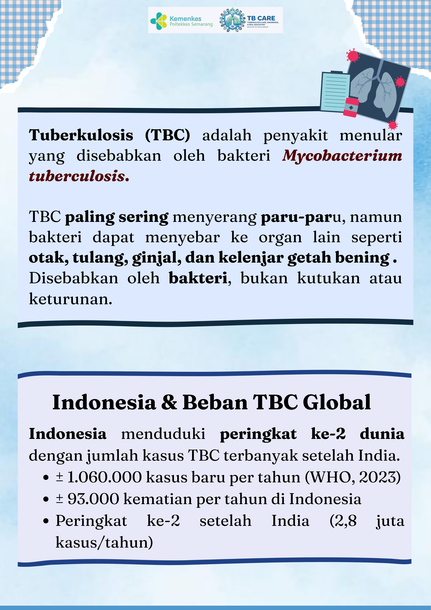
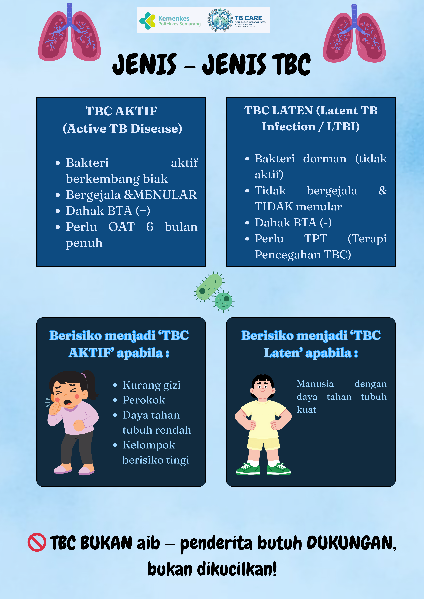
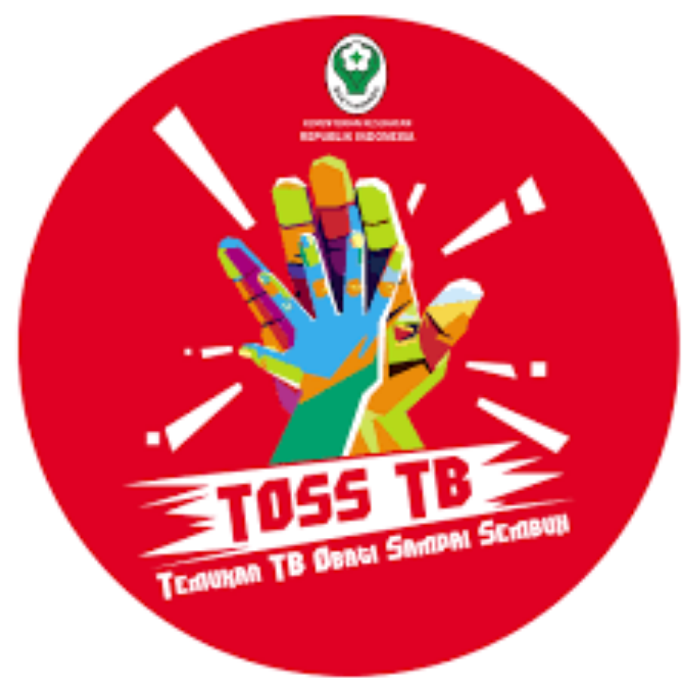
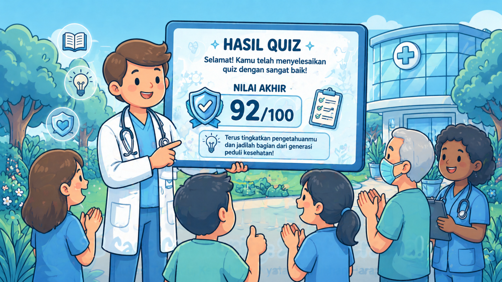
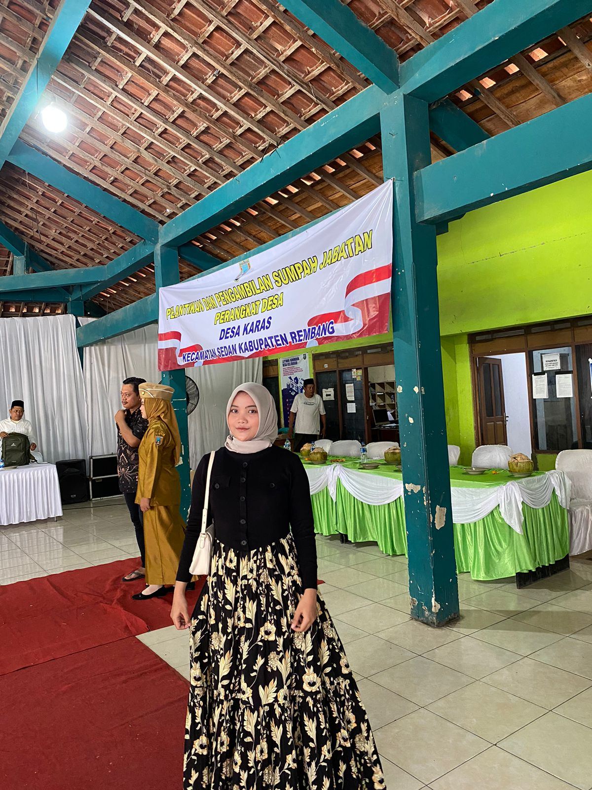
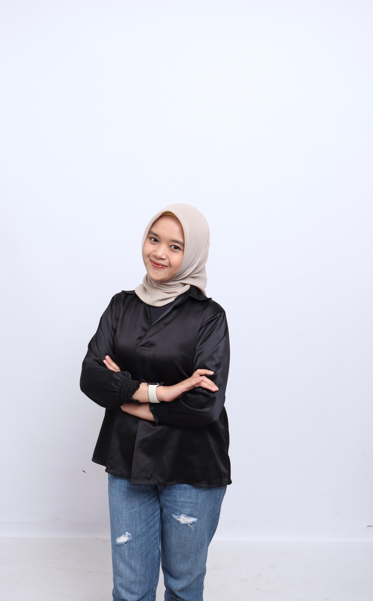
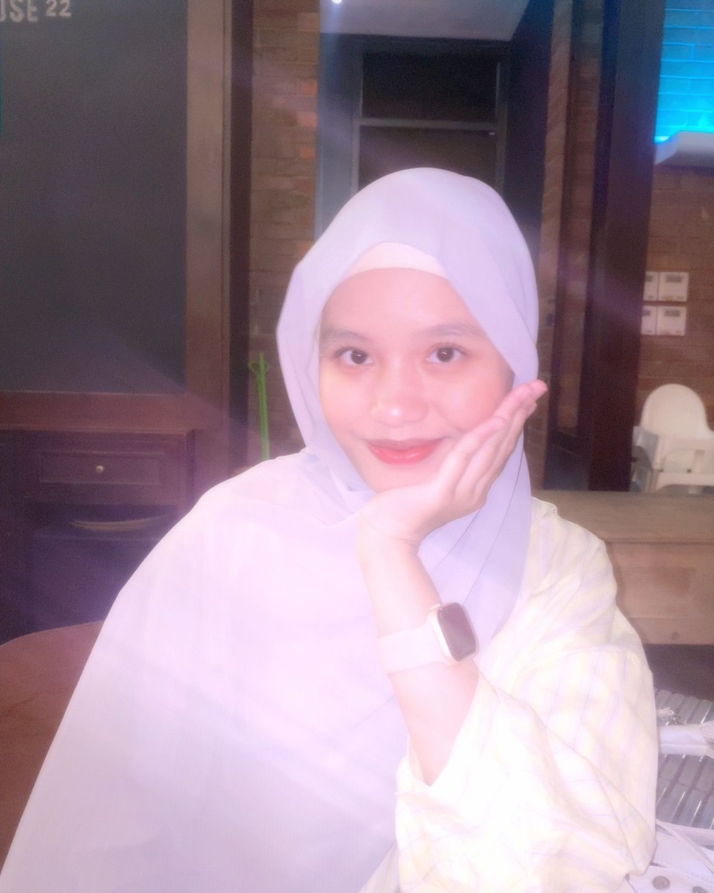
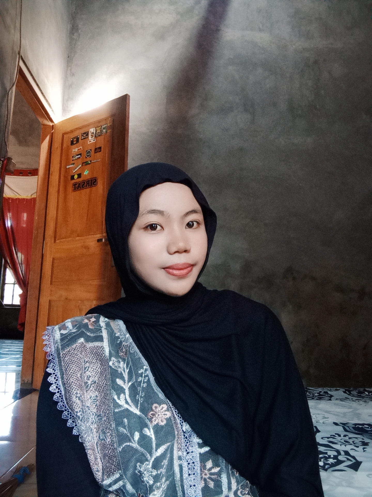

Flipbook








Mari kenali TB lebih dekat, Cegah sebelum terlambat
Kenali perbedaan TBC Aktif dan TBC Laten
TB CARE (Tuberkulosis Care, Awareness, and RealEducation) adalah media edukasi kesehatan digital yang hadir untuk membantu masyarakat memahami Tuberkulosis (TB) dengan cara yang mudah, menarik, dan dapat diakses kapan saja.
Website ini dikembangkan sebagai bentuk kepedulian terhadap tingginya kasus TB di masyarakat, sekaligus upaya untuk meningkatkan kesadaran akan pentingnya pencegahan dan deteksi dini TB.
Indonesia masih menjadi salah satu negara dengan kasus TB terbanyak di dunia. Sayangnya, masih banyak masyarakat yang belum mengetahui gejala, cara penularan, hingga pentingnya pengobatan tuntas TB. Kurangnya informasi yang mudah dijangkau sering kali membuat TB terlambat terdeteksi dan stigma terhadap penderita pun masih tinggi.
TB CARE hadir sebagai jembatan antara informasi kesehatan yang akurat dengan masyarakat yang membutuhkannya. Platform ini dikemas dengan cara yang menyenangkan dan mudah dipahami oleh siapa saja.
Ikuti langkah sederhana berikut untuk mulai belajar tentang TBC
Buka website TB CARE dengan cara scan barcode yang tersedia pada Roda Informatif TB CARE.
Klik menu sesuai kebutuhan belajar Anda:
Nikmati proses belajar yang interaktif dan menyenangkan. Jangan ragu untuk mengeksplorasi semua fitur yang tersedia untuk mendapatkan pemahaman yang lebih baik tentang TB. Mulai belajar sesuai urutan yang disarankan untuk hasil terbaik:




P1337420623008

P1337420623059

P1337420623003
P1337420623030

P1337420623065